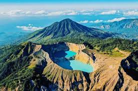
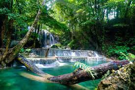

|
|  |
|  |
 |
Pulau Bali
Pulau Bali adalah salah satu pulau terindah di Dunia. Pulau Bali merupakan pulau wisata terbaik di antara pulau lainnya. Banyak sekali Obyek-obyek wisata Bali
Candi Borobudur
Candi Borobudur adalah candi Budha terbesar di dunia. Candi ini dibangun ketika Samaratungga – raja dari dinasti Syailendra memerintah di Jawa Tengah. Candi ini tercatat sebagai salah satu tujuh keajaiban dunia. Candi Borobudur terletak di desa Borobudur, Magelang, Jawa Tengah. Candi Borobudur sangat besar dan terbuat dari blok batu-batu besar dengan arsitektur yang sangat megah.
Danau Tiga Warna Kelimutu
Danau tiga warna Kelimutu adalah salah satu dari sembilan keajaiban dunia. Danau tiga warna terletak di Gunung Kelimutu, Flores,NTT. Disana ada tiga danau yang berdekatan namun dengan warna-warna yang berbeda. Danau kawah tersebut adalah Tiwu Ata Polo (danau merah), Tiwu Nua Muri Kooh Fai (danau hijau) dan Tiwu Ata Mbupu (danau biru). Danau Kelimutu merupakan satu-satunya danau di dunia yang airnya dapat berubah setiap saat, dari merah menjadi hijau tua dan kemudian merah hati, hijau tua menjadi hijau muda, coklat kehitaman menjadi biru langit. Fenomena alam ini merupakan keajaiban.
Gunung Bromo
Gunung Bromo merupakan salah satu gunung dari lima gunung yang terdapat di komplek Pegunungan Tengger di laut pasir. Daya tarik gunung ini adalah merupakan gunung yang masih aktif. Obyek wisata Gunung Bromo ini merupakan fenomena alam dengan Kekhasan gejala alam yang tidak ditemukan di tempat lain adalah adanya kawah di tengah kawah (creater in the creater) dengan hamparan laut pasir yang mengelilinginya.